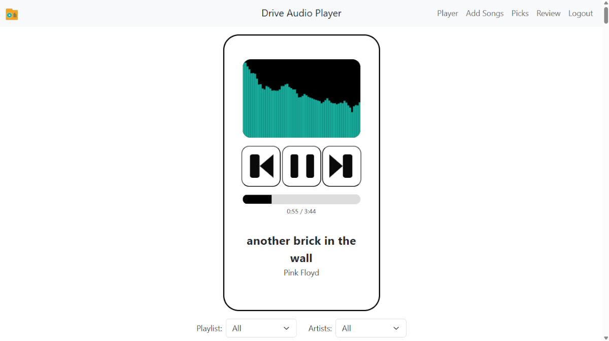

Play music from Google Drive. No ads. Full control.
Drive Audio Player is a web-based Google Drive music player that lets you play and organize your own MP3 files directly from Google Drive. There are no ads, no subscriptions, and no algorithms deciding what you hear.
Many people search for a Google Drive audio player because streaming apps interrupt listening with ads and make it difficult to manage personal music libraries. Drive Audio Player turns Google Drive into a simple, private online music player.
Drive Audio Player uses a folder-restricted access model. The app creates a single folder in your Google Drive and can only access files inside that folder. It cannot see or scan the rest of your Drive.
Watch a short demo showing how to upload music, create playlists, and play songs from Google Drive.